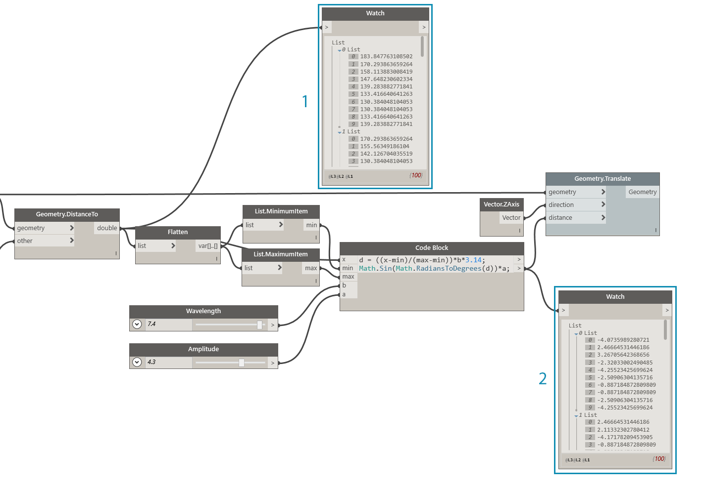
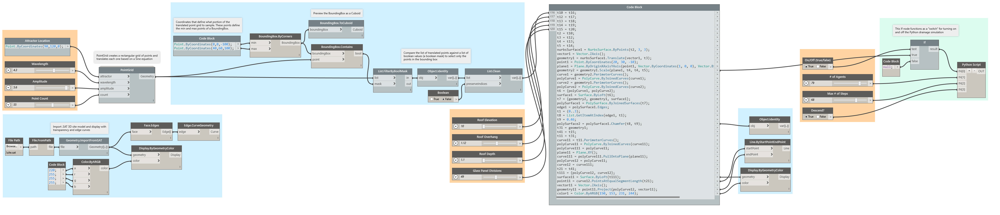

Vorgehensweisen für Diagramme
In den vorangegangenen Kapiteln dieses Handbuchs wurde bereits behandelt, wie Sie die leistungsstarken Funktionen zur visuellen Programmierung in Dynamo einsetzen können. Ein gutes Verständnis dieser Funktionen ist eine solide Grundlage und der erste Schritt bei der Erstellung zuverlässiger visueller Programme. Bei der Verwendung visueller Programme in der Praxis, der Weitergabe an Kollegen, der Behebung von Fehlern oder beim Testen von Grenzen müssen zusätzliche Aspekte berücksichtigt werden. Wenn andere Benutzer mit Ihrem Programm arbeiten sollen oder Sie damit rechnen, es z. B. sechs Monate später erneut zu öffnen, müssen seine Grafik und seine Logik unmittelbar verständlich sein. Dynamo stellt zahlreiche Werkzeuge zur Verfügung, die Ihnen helfen, die Komplexität Ihres Programms zu bewältigen. In diesem Kapitel finden Sie Richtlinien zu ihren Verwendungszwecken.

Komplexität reduzieren
Während Sie Ihr Dynamo-Diagramm entwickeln und Ihre Ideen testen, kann es rasch an beachtlicher Größe und Komplexität zunehmen. Ein funktionsfähiges Programm zu erstellen, ist entscheidend, es ist jedoch auch wichtig, dies auf möglichst einfachem Weg zu erreichen. Das Diagramm lässt sich so nicht nur schneller und besser vorhersehbar ausführen, sondern seine Logik ist dadurch für Sie und andere Benutzer problemlos verständlich. Im Folgenden werden einige Methoden beschrieben, mit denen Sie die Logik Ihres Diagramms verdeutlichen können.
Modularisieren mit Gruppen
- Gruppen ermöglichen es, bei der Entwicklung eines Programms separate Teile mit unterschiedlichen Funktionen zu erstellen.
- Mithilfe von Gruppen können Sie darüber hinaus große Teile des Programms verschieben, wobei die Modularität und Ausrichtung erhalten bleiben.
- Sie können die Farbe einer Gruppe zur Differenzierung ihres Verwendungszwecks (Eingaben oder Funktionen) ändern.
- Gruppen können als Ausgangspunkt beim Organisieren des Diagramms zur Vereinfachung der Erstellung benutzerdefinierter Blöcke verwendet werden.

Die Farben in diesem Programm kennzeichnen den Verwendungszweck der einzelnen Gruppen. Mithilfe dieses Verfahrens können Sie eine Hierarchie in den von Ihnen entwickelten Grafikstandards oder -vorlagen erstellen.
- Funktionsgruppe (blau)
- Eingabengruppe (orange)
- Skriptgruppe (grün) Informationen zur Verwendung von Gruppen finden Sie unter Verwalten Ihres Programms.
Effizientere Entwicklung mit Codeblöcken
In manchen Fällen können Sie in einem Codeblock eine Methode für eine Zahl oder einen Block schneller eingeben, als Sie nach ihr suchen könnten (Point.ByCoordinates, Number, String, Formula).
Codeblöcke sind nützlich zum Definieren benutzerdefinierter Funktionen in DesignScript, damit weniger Blöcke im Diagramm benötigt werden.

1 und 2 führen dieselbe Funktion aus. Dabei nahm das Schreiben einiger Codezeilen wesentlich weniger Zeit in Anspruch als das Suchen und Hinzufügen jedes einzelnen Blocks. Die Angaben im Codeblock sind darüber hinaus wesentlich prägnanter.
- In Codeblock geschriebenes DesignScript
- Entsprechendes Programm in Blöcken Informationen zur Verwendung von Codeblöcken finden Sie unter Was ist ein Codeblock.
Komprimieren mit Block zu Code
- Sie können mithilfe von Block zu Code die Komplexität eines Diagramms reduzieren, wobei eine Gruppe einfacher Blöcke zusammengefasst und das entsprechende DesignScript in einen einzigen Codeblock geschrieben wird.
- Block zu Code kann Code komprimieren, ohne die Verständlichkeit des Programms zu beeinträchtigen.
- Die Verwendung von Block zu Code bietet die folgenden Vorteile:
- Einfache Komprimierung von Code in eine einzige Komponente, die nach wie vor bearbeitet werden kann
- Vereinfachung eines großen Teils eines Diagramms
- Nützlich, wenn das „Mini-Programm“ nicht oft bearbeitet werden muss
Nützlich für die Integration anderer Codeblock-Funktionalität, z. B. Funktionen
Die Verwendung von Block zu Code bringt die folgenden Nachteile mit sich:
- Schlechtere Lesbarkeit wegen allgemeiner Benennung
- Für andere Benutzer schwieriger zu verstehen
- Keine einfache Möglichkeit, zur Version aus der visuellen Programmierung zurückzuwechseln

- Vorhandenes Programm
- Mithilfe von Block zu Code erstellter Codeblock Informationen zur Verwendung von Block zu Code finden Sie unter DesignScript-Syntax.
Flexibler Zugriff auf Daten mit List@Level
- List@Level kann es Ihnen erleichtern, Ihr Diagramm durch Ersetzen der Blöcke List.Map und List.Combine zu vereinfachen, die viel Platz im Ansichtsbereich beanspruchen können.
- List@Level bietet ein schnelleres Verfahren zum Konstruieren von Blocklogik als List.Map/List.Combine, indem es den Zugriff auf Daten auf einer beliebigen Ebene einer Liste direkt über den Eingabeanschluss eines Blocks ermöglicht.

Sie können überprüfen, wie viele True-Werte BoundingBox.Contains zurückgibt und in welchen Listen diese enthalten sind, indem Sie List@Level für den list-Eingang von CountTrue aktivieren. List@Level ermöglicht es, die Ebene festzulegen, auf der die Eingabe Daten übernimmt. List@Level ist flexibel und effizient und wird gegenüber anderen Verfahren, die List.Map und List.Combine nutzen, dringend empfohlen.
- Zählen der True-Werte auf Listenebene 2
- Zählen der True-Werte auf Listenebene 3 Informationen zur Verwendung von List@Level finden Sie unter Listen von Listen.
Lesbarkeit gewährleisten
Gestalten Sie Ihr Diagramm nicht nur so einfach und effizient wie möglich, sondern streben Sie auch eine übersichtliche grafische Darstellung an. Beziehungen sind trotz Ihrer Bemühungen, das Diagramm intuitiv mit logischen Gruppen zu gestalten, eventuell nicht ohne Weiteres zu erkennen. Ein einfacher Block innerhalb einer Gruppe oder das Umbenennen eines Schiebereglers kann Ihnen oder anderen Benutzern unnötige Verwirrung oder das Suchen im gesamten Diagramm ersparen. Im Folgenden werden mehrere Verfahren beschrieben, mit deren Hilfe Sie eine einheitliche Grafik innerhalb eines Diagramms und diagrammübergreifend erzielen können.
Visuelle Kontinuität durch Ausrichten der Blöcke
- Um den Arbeitsaufwand nach dem Erstellen des Diagramms zu reduzieren, achten Sie auf eine gute Leserlichkeit des Blocklayouts, indem Sie die Blöcke während der Arbeit häufig ausrichten.
- Wenn andere Benutzer mit Ihrem Diagramm arbeiten sollen, sorgen Sie vor der Bereitstellung für ein Layout mit einem leicht verständlichen Ablauf aus Blöcken und Drähten.
- Um die Ausrichtung zu erleichtern, verwenden Sie die Funktion Blocklayout bereinigen zur automatischen Ausrichtung des Diagramms. Durch manuelles Ausrichten erzielen Sie allerdings präzisere Ergebnisse.

- Ungeordnetes Diagramm
- Ausgerichtetes Diagramm Informationen zur Verwendung der Blockausrichtung finden Sie unter Verwalten von Programmen.
Aussagekräftige Beschriftung durch Umbenennen
- Durch Umbenennen von Eingaben machen Sie Ihr Diagramm für andere Benutzer leicht verständlich, insbesondere, wenn Objekte, die sich außerhalb des Bildschirms befinden, verbunden werden sollen.
- Benennen Sie nach Möglichkeit nicht Blöcke, sondern Eingaben um. Als Alternative dazu können Sie einen benutzerdefinierten Block aus einer Gruppe von Blöcken erstellen und ihn umbenennen. Dabei ist ersichtlich, dass andere Elemente darin enthalten sind.

- Eingaben für die Bearbeitung der Oberfläche
- Eingaben für Architekturparameter
- Eingaben für das Skript zur Simulation der Entwässerung Um einen Block umzubenennen, klicken Sie mit der rechten Maustaste auf seinen Namen, und wählen Sie Block umbenennen.
Erläuterungen durch Anmerkungen
- Fügen Sie eine Anmerkung hinzu, wenn ein Bestandteil des Diagramms eine Erläuterung in Klartext benötigt, die nicht in den Blöcken selbst gegeben werden kann.
- Fügen Sie eine Anmerkung hinzu, wenn eine Sammlung von Blöcken oder eine Gruppe zu groß oder zu komplex ist und nicht direkt verstanden werden kann.

- Anmerkung zur Beschreibung des Teils des Programms, der Rohwerte der Verschiebungsstrecken zurückgibt
- Anmerkung zur Beschreibung des Codes, der diese Werte einer Sinuswelle zuordnet Informationen zum Hinzufügen einer Anmerkung finden Sie unter Verwalten von Programmen.
Laufendes Testen
Es ist wichtig, während der Entwicklung des visuellen Skripts zu überprüfen, ob die zurückgegebenen Ergebnisse Ihren Erwartungen entsprechen. Nicht alle Fehler oder Probleme lassen das Programm sofort fehlschlagen, dies gilt insbesondere für Nullwerte, die sich erst viel später im weiteren Verlauf auswirken können. Diese Vorgehensweise wird auch im Zusammenhang mit Textskripts unter Vorgehensweisen zur Skripterstellung beschrieben. Das folgende Verfahren hilft Ihnen, sicherzustellen, dass Sie das gewünschte Ergebnis erzielen:
Überwachen von Daten mit Beobachtungs- und Vorschaublöcken
- Verwenden Sie während der Entwicklung des Programms Beobachtungs- oder Vorschaublöcke, um zu überprüfen, ob wichtige Ausgaben das erwartete Ergebnis zurückgeben.

Mithilfe der Beobachtungsblöcke werden verglichen:
- Die Rohwerte der Verschiebungsstrecken
- Die durch die Sinusgleichung geleiteten Werte Informationen zur Verwendung der Beobachtungsfunktion finden Sie unter Bibliothek.
Wiederverwendbarkeit sicherstellen
Ihr Programm wird sehr wahrscheinlich irgendwann auch von anderen Benutzern geöffnet werden, selbst wenn Sie unabhängig voneinander arbeiten. Diese Benutzer sollten in der Lage sein, anhand der Ein- und Ausgaben rasch zu bestimmen, was das Programm benötigt und was es produziert. Dies ist besonders bei der Entwicklung benutzerdefinierter Blöcke wichtig, die an die Dynamo-Community weitergegeben und in Programmen anderer Benutzer verwendet werden sollen. Mit diesen Vorgehensweisen erhalten Sie zuverlässige, wiederverwendbare Programme und Blöcke.
Verwalten der Ein- und Ausgaben
- Für eine optimale Lesbarkeit und Skalierbarkeit sollten Sie die Ein- und Ausgaben auf ein Minimum beschränken.
- Versuchen Sie, eine Strategie zur Entwicklung der Logik zu erarbeiten, indem Sie zunächst einen groben Plan ihrer Funktionsweise erstellen, bevor Sie den ersten Block im Ansichtsbereich einfügen. Behalten Sie während der Arbeit an diesem Plan im Auge, welche Ein- und Ausgaben in den Skripts verwendet werden sollen.
Verwenden von Voreinstellungen zum Einbetten von Eingabewerten
- Falls bestimmte Optionen oder Bedingungen vorhanden sind, die Sie in das Diagramm einbetten möchten, empfiehlt es sich, Voreinstellungen für den schnellen Zugriff zu verwenden.
- Mithilfe von Voreinstellungen können Sie darüber hinaus durch Caching spezifischer Schiebereglerwerte die Komplexität in Diagrammen mit langen Laufzeiten reduzieren.
Informationen zur Verwendung von Voreinstellungen finden Sie unter Verwalten von Daten mit Voreinstellungen.
Verwenden von benutzerdefinierten Blöcken als Container für Programme
- Verwenden Sie einen benutzerdefinierten Block, wenn das Programm in einem einzelnen Container zusammengefasst werden kann.
- Verwenden Sie einen benutzerdefinierten Block, wenn ein Teil des Diagramms oft in anderen Programmen wiederverwendet werden soll.
- Verwenden Sie einen benutzerdefinierten Block, wenn Sie eine Funktion für die Dynamo-Community bereitstellen möchten.

Indem Sie das Programm zur Verschiebung von Punkten in einem benutzerdefinierten Block zusammenfassen, wird dieses zuverlässige, spezielle Programm portierbar und wesentlich leichter verständlich. Aussagekräftige Namen für die Eingabeanschlüsse erleichtern es anderen Benutzern, die Verwendungsweise des Blocks zu verstehen. Achten Sie darauf, für jede Eingabe eine Beschreibung und den erforderlichen Datentyp anzugeben.
- Bestehendes Programm für Attraktor
- Benutzerdefinierter Block, in dem dieses Programm, PointGrid, enthalten ist Weitere Informationen zur Verwendung benutzerdefinierter Blöcke finden Sie unter Einführung zu benutzerdefinierten Blöcken.
Vorlagen erstellen
- Mithilfe von Vorlagen können Sie Grafikstandards für alle Ihre visuellen Diagramme einrichten, um sie Ihren Kollegen in einheitlicher, verständlicher Weise bereitzustellen.
- Beim Erstellen einer Vorlage können Sie Gruppenfarben und Schriftgrößen standardisieren, um Typen von Arbeitsabläufen oder Datenaktionen zu kategorisieren.
- Sie können beim Erstellen einer Vorlage sogar Beschriftung, Farbe oder Stil für die Unterscheidung zwischen Frontend- und Backend-Arbeitsabläufen in Ihrem Diagramm standardisieren.

- Die Benutzeroberfläche (das Frontend) des Programms umfasst den Projektnamen, die Eingabe-Schieberegler und die Importgeometrie.
- Backend des Programms.
- Kategorien für Gruppenfarben (allgemeines Design, Eingaben, Python-Skripts, importierte Geometrie)
Übung – Dach in der Architektur
Laden Sie die zu dieser Übungslektion gehörige Beispieldatei herunter (durch Rechtsklicken und Wahl der Option Save Link As). Eine vollständige Liste der Beispieldateien finden Sie im Anhang. RoofDrainageSim.zip
Sie haben eine Reihe optimaler Verfahren festgelegt und wenden diese jetzt auf ein rasch zusammengestelltes Programm an. Das Programm erstellt zwar wie vorgesehen das Dach, das Diagramm stellt jedoch eher eine „Mind-Map“ des Autors dar. Ihm fehlt die Struktur, und es gibt keine Beschreibung des Verwendungszwecks. Sie ordnen, beschreiben und analysieren das Programm unter Verwendung der optimalen Verfahren so, dass andere Benutzer seine Verwendungsweise verstehen.

Das Programm funktioniert, aber dem Diagramm fehlt Struktur.
Bestimmen Sie als Erstes die Daten und die Geometrie, die das Programm zurückgibt.

Um logische Unterteilungen, d. h. Modularität zu erzielen, müssen Sie die Stellen kennen, an denen wesentliche Änderungen an den Daten erfolgen. Analysieren Sie den Rest des Programms mithilfe von Beobachtungsblöcken, um festzustellen, ob Gruppen erkennbar sind, bevor Sie mit dem nächsten Schritt fortfahren.
- Dieser Codeblock mit einer mathematischen Gleichung scheint ein wichtiger Bestandteil des Programms zu sein. Im Beobachtungsblock ist zu erkennen, dass er Listen von Verschiebungsstrecken zurückgibt.
- Der Zweck dieses Bereichs ist nicht ohne Weiteres ersichtlich. Die Anordnung der True-Werte auf der Listenebene L2 aus BoundingBox.Contains und das Vorhandensein von List.FilterByBoolMask lassen darauf schließen, dass ein Teil des Punktrasters als Beispiel entnommen wird.
Nachdem Sie die zugrunde liegenden Bestandteile des Programms verstanden haben, fassen Sie sie in Gruppen zusammen.

Gruppen ermöglichen dem Benutzer die visuelle Unterscheidung der Programmbestandteile.
- 3D-Grundstücksmodell importieren
- Punktraster entsprechend der Sinusgleichung verschieben
- Bestandteil des Punktrasters als Beispiel
- Dachoberfläche der Architektur erstellen
- Glasfassade erstellen
Nachdem Sie die Gruppen eingerichtet haben, richten Sie die Blöcke innerhalb des Diagramms auf einheitliche Weise aus.

Eine einheitliche Darstellung macht den Programmablauf und die impliziten Beziehungen zwischen den Blöcken für den Benutzer leichter erkennbar.
Machen Sie das Programm noch leichter verständlich, indem Sie eine weitere Ebene grafischer Verbesserungen hinzufügen. Fügen Sie Anmerkungen hinzu, mit denen Sie die Funktionsweise eines bestimmten Programmteils beschreiben, geben Sie den Eingaben benutzerdefinierte Namen, und weisen Sie verschiedenen Typen von Gruppen Farben zu.

Diese grafischen Verbesserungen geben dem Benutzer genaueren Aufschluss über den Verwendungszweck des Programms. Die unterschiedlichen Farben der Gruppen helfen bei der Unterscheidung von Eingaben und Funktionen.
- Anmerkungen
- Eingaben mit aussagekräftigen Namen
Bevor Sie damit beginnen, das Programm zusammenzufassen, suchen Sie nach einem geeigneten Platz für den Python-Skript-Entwässerungssimulator. Verbinden Sie die Ausgabe der ersten skalierten Dachoberfläche mit der dazugehörigen Skripteingabe.

Durch die Entscheidung, das Skript an dieser Stelle des Programms zu integrieren, wird erreicht, dass die Entwässerungssimulation für die einfache Originaloberfläche des Dachs durchgeführt wird. Diese spezielle Oberfläche wird nicht in der Vorschau angezeigt, aber durch diesen Schritt entfällt die separate Auswahl der oberen Fläche in der gefasten PolySurface.
- Quellgeometrie für Skripteingabe
- Python-Block
- Eingabe-Schieberegler
- „Schalter“ Ein-Aus
Damit befinden sich alle Elemente an ihrem Platz, und als Nächstes vereinfachen Sie das Diagramm.

Durch Zusammenfassen des Programms mit Block zu Code und benutzerdefinierten Blöcken haben Sie das Diagramm erheblich verkleinert. Die Gruppen für die Erstellung der Dachoberfläche und der Wände wurden in Code konvertiert, da sie für dieses Programm hochspezifisch sind. Die Gruppe zur Verschiebung von Punkten ist in einem benutzerdefinierten Block eingeschlossen, da sie auch in anderen Programmen verwendet werden könnte. Erstellen Sie in der Beispieldatei Ihren eigenen benutzerdefinierten Block aus der Gruppe zur Verschiebung von Punkten.
- Benutzerdefinierter Block als Container für die Gruppe zur Verschiebung von Punkten
- Block zu Code für die Zusammenfassung der Gruppen zum Erstellen der Oberfläche für das Dach in der Architektur und der Wände
Im letzten Schritt erstellen Sie Voreinstellungen für als Beispiele zu verwendende Dachformen.

Diese Eingaben sind die wesentlichen Angaben zum Steuern der Dachform und geben den Benutzern Hinweise auf die Möglichkeiten des Programms.
Das Programm mit Ansichten zweier Voreinstellungen.


Die Muster der Dachentwässerung bieten dem Benutzer eine analytische Ansicht der jeweiligen Voreinstellungen.